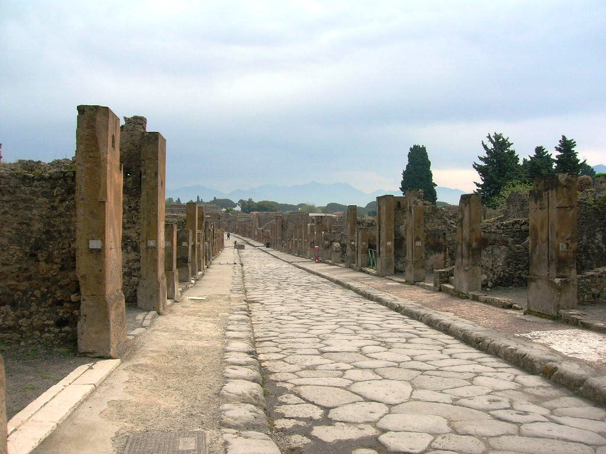

My Genius: Ancient Roman Roads
Ancient Roman roads are an engineering wonder. They connected the entire Roman empire. These roads were built to last, more thought through and valued than modern roads. Well patrolled and used they added to the thriving empire. They are still
functioning roads hundreds and hundreds of years later as seen below.
Appian Way

Here is why these roads were so special:
- They were very straight
- This made for incredibly efficient travel, they were designed for speed of travel.
- They allowed the army to move very fast.
- They were built well and made to last.
- They had many post officies and places to stay along the road
- Soliders patrolled the roads making them very safe